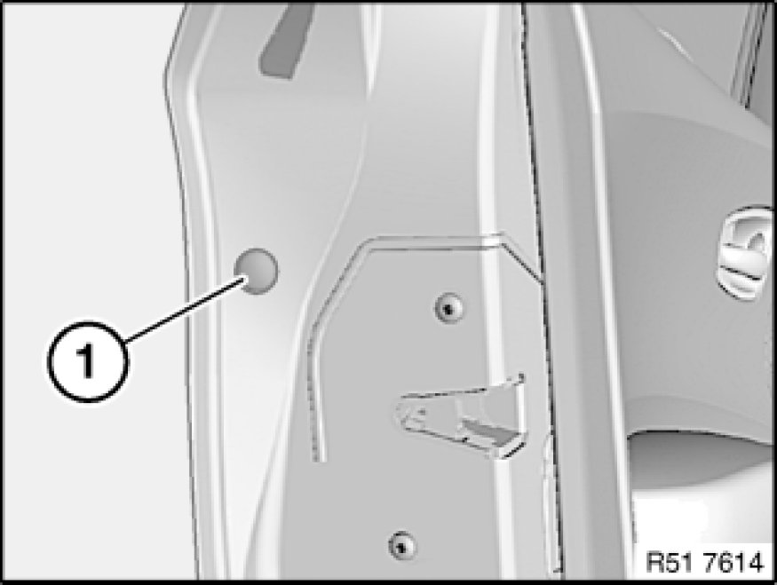
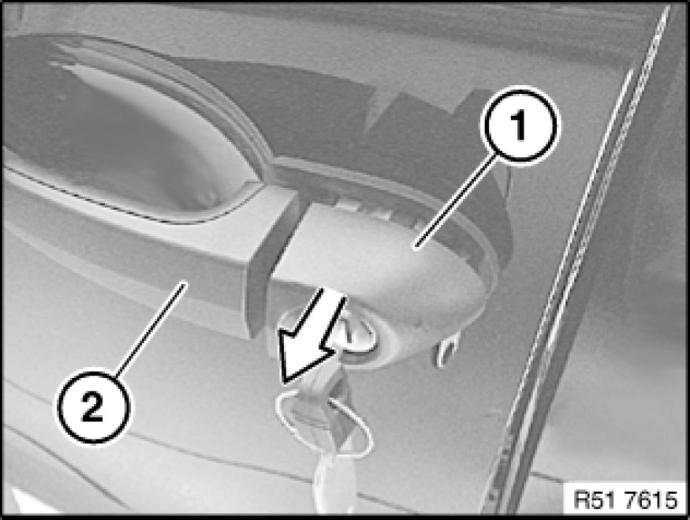
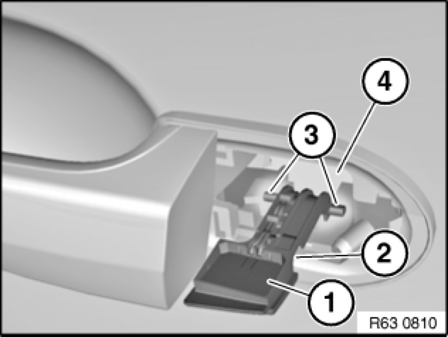
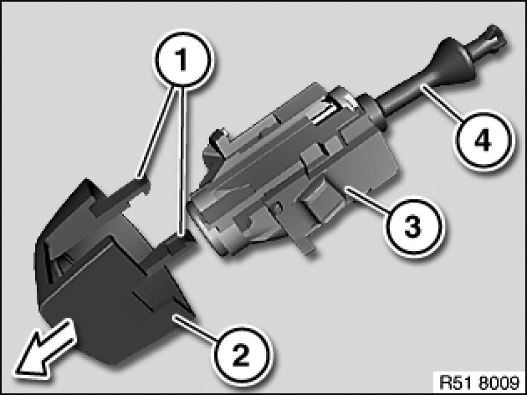

Removing and Installing/Replacing Complete Lock Cylinder in Left or Right Front
51 21 140 - Removing and installing/replacing complete lock cylinder in left or right front door

Lever out cap (1) and release screw underneath.
Installation:
If necessary, replace faulty trim (1).

Insert ignition key into lock cylinder.
Turn ignition key slightly and pull off cover (1) in direction of arrow with outside door handle (2) opened slightly.
Installation:
Lock cylinder must be correctly seated in door lock.
Check function of lock cylinder.

Version with light package:
Installation:
Make sure outside door handle light (1) is correctly positioned in area (2).
Guides (3) of outside door handle light (1) must be correctly seated in carrier for outside door handle (4).

Replacement:
Remove catches (1) and detach cover (2) from lock cylinder (3).
Installation:
Catches (1) of cover (2) must not be damaged.
Paddle (4) of lock cylinder (3) must not be damaged.